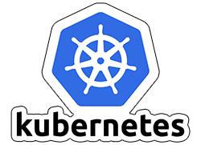
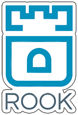
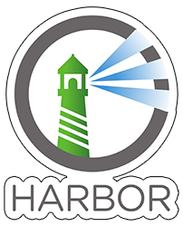
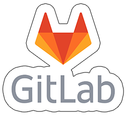
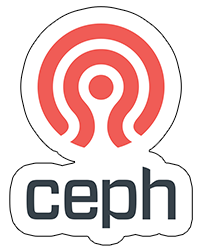

Spécialistes en infrastructure informatique, devops et cloud native
Depuis 2017, infraBuilder accompagne ses clients vers la conteneurisation et le cloud-native sur Kubernetes. Que ce soit pour aider les développeurs à concevoir des applications taillées pour ces nouvelles approches, ou pour aider les administrateurs réseaux et systèmes à déployer les clusters permettant d'exécuter ces conteneurs.
Le réseau Build-and-Run est un groupe de Devops freelances, spécialistes cloud computing, CI/CD, devops et infrastructures innovantes. Il regroupe essentiellement des freelances de la région Aix-Marseille.
Parce que l'informatique est notre passion, nous aimons la partager lors d'événements Meetup Devops Aix-Marseille que nous organisons avec nos confrères du groupement Build-and-Run. Rendez-vous sur la page du Meetup Devops Aix Marseille pour connaitre nos prochains événements !
Nous concevons, installons, maintenons votre infrastructure Kubernetes adaptée à vos besoins, que ce soit en cloud, on-prem ou en hybride. Nous accompagnons vos équipes dans leur transformation vers le cloud-native et la conteneurisation. Nous gérons les sauvegardes, le monitoring, et nous assurons des astreintes 24/7 afin que vous puissiez compter sur votre infrastruture.
A destination de vos équipes de développement, devops et adminsys, nos formations permettent d'exploiter pleinement la puissance de Kubernetes et d'éviter les écueils. Formation à distance ou en présentiel, intervenant expert Kubernetes et support de formation fourni. Possibilité de prise en charge par votre OPCO grâce à notre partenaire Shorg.
Vous avez besoin de conseils autour de Kubernetes, Rancher, le cloud-native ou le devops dans votre entreprise ? Vous rencontrez des problèmes et avez besoin d'aide ? Faites appel à nos experts Kubernetes à la journée pour des sessions dédiées.
Une transformation cloud-native ne se fait pas du jour au lendemain. Nous pouvons vous accompagner pendant plusieurs mois sous la forme de journées de conseil récurrentes afin de faciliter votre passage dans le monde du conteneur avec Kubernetes.
Lors de l'installation d'un cluster Kubernetes, une étape consiste à choisir le plugin de réseau (CNI). Changer de CNI une fois le cluster déployé n'est pas chose aisée et constitue la plupart du temps une source de rupture de services. Mais alors, quelle CNI choisir ?
Dans cet article paru sur Medium, nous comparons les performances et fonctionnalités de différents plugins de réseau (CNI) pour Kubernetes afin de vous aider à choisir la CNI adaptée à votre besoin.
Kubernetes est une technologie d'excellence. L'une de ses principales difficultés réside néanmoins dans le vocabulaire qui lui est spécifique.
Nous avons constitué un petit glossaire au format A4 (facile à imprimer), regroupant des définitions courtes des principaux termes utilisés avec Kubernetes.
Les premiers jours d'utilisation de Kubernetes peuvent être déroutants : pas facile de retenir les commandes de l'outil kubectl pour intéragir avec le cluster !
Retrouvez les principales commandes utiles pour Kubernetes dans un mémo au format A4 (facile à imprimer).
Vous souhaitez reproduire nos benchmarks de réseau sur vos clusters Kubernetes, chez vous ou chez votre hébergeur ? C'est possible ! Nous avons ouvert notre outil de benchmark de CNI.
KNB (Kubernetes Network Benchmark) est un outil en ligne de commande composé d'un unique script en bash. Il permet de mesurer les performances de réseau entre deux noeuds d'un cluster Kubernetes et de mesurer la consommation de ressources de ces noeuds pendant les tests, sans avoir à déployer d'outils de monitoring tiers.
Avant de passer sur Kubernetes, il faut tout d'abord conteneuriser son application. Vous êtes développeur PHP et vous souhaitez faire un pas vers la conteneurisation, mais vous n'avez jamais utilisé Docker ?
Nous vous proposons un tutoriel expliquant les bases de Docker et de la conteneurisation, appliquées au langage PHP. Pas de framework PHP ou autre, l'exercice reste tout simple pour se focaliser sur la conteneurisation elle-même.
Les Ingress sont des ressources permettant de définir des règles de routage HTTP dans un cluster Kubernetes. L'outil kubectl permet d'intéragir avec un cluster Kubernetes pour créer des Deployments, des ConfigMaps, etc. Hélas, il ne possède pas nativement de commandes pour créer, éditer ou mettre à jour facilement une règle d'Ingress.
Vous pouvez gérer vos Ingress facilement avec le plugin kubectl-ingress que nous avons développé. Composé d'un script bash, il vous permet de créer des Ingress et de les mettre à jour. Il propose également des options liées avec Cert-Manager pour la création automatique de certificats SSL avec Let's Encrypt.
Oui ! C'est possible via notre partenaire Shorg, organisme de formation agréé.
Non, nous ne sommes pas hébergeur. Les infrastructures que nous maintenons sont chez nos clients. Les données ne sortent pas de leurs serveurs. Ceci, combiné à l'utilisation de technologies standards, permet également de garantir la réversibilité à tout instant, sans migration.
    